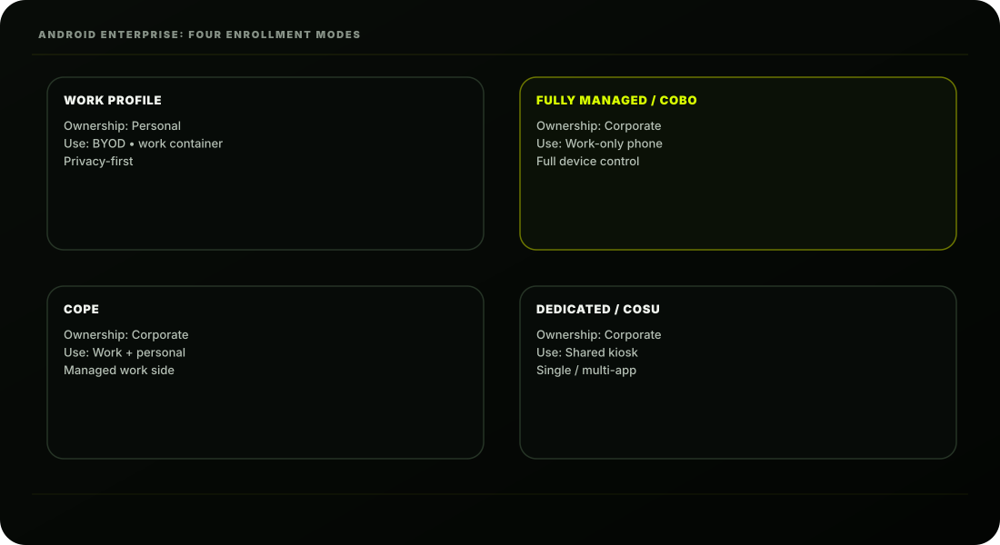
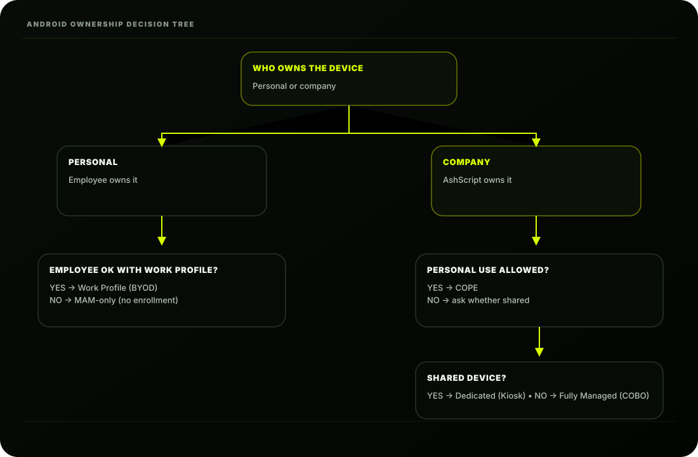

The Scene
Thursday morning. Ashpak's desk has three items on it:
A note from the Sales Director: "200 company Samsung phones need to be managed. Sales reps
should only access the CRM, email, and Teams. No social media. No personal app stores."
A message from HR: "About 300 employees want to use their personal Android phones for work
email. They're worried about privacy."
A sticky note from the warehouse manager: "We have 20 Android scanner devices shared
between shifts. No personal use. Only the inventory app."
Three completely different requirements. Three completely different Android enrollment methods.
Ashpak opens his laptop and pulls up his Android Enterprise documentation.
"Android is the most complex enrollment ecosystem," he thinks. "But once you understand the
model, it's actually the most flexible."
Android Enterprise: The Foundation
Before Intune can manage any Android device, Ashpak must understand Android Enterprise ;
Google's framework for enterprise Android management.
Android Enterprise replaced the older Device Administrator (DA) model. If you've worked with older
Android MDM; forget it. Android Enterprise is fundamentally different.
Android Enterprise comparison
| Old: Device Administrator | New: Android Enterprise |
|---|
| Deprecated by Google | Current standard |
| Limited capabilities | Rich management capabilities |
| No work/personal split | Clear work/personal boundary |
| Apps from any source | Apps via Managed Google Play |
| Poor privacy | Privacy built-in for BYOD |
| Android 9 and below | Android 6.0+ (required) |
Prerequisite: Connect Managed Google Play to Intune
Before any Android enrollment, Ashpak must link Managed Google Play to AshScript's Intune tenant.
This is the single most important Android prerequisite.
Managed Google Play is Google's enterprise app store; the source for all apps deployed to Android
enterprise devices.
Why Managed Google Play? Unlike consumer Google Play where anyone installs anything,
Managed Google Play lets Ashpak:
Push approved apps silently to devices
Block access to consumer Play Store
Control which app versions are used
Distribute private/custom AshScript apps
to connect Managed Google Play
MANAGED GOOGLE PLAY SETUP
1Click "Launch Google to connect"
2Sign in with enterprise Google account:
admin@ashscript.com
(Create a Google account for AshScript
; not personal Gmail)
3Follow Google's enterprise sign-up
5Managed Google Play connected to Intune tenant
The Four Android Enterprise Enrollment Modes
Now let's address all three of Ashpak's requirements. Android Enterprise has four enrollment modes ;
each designed for a specific ownership and use scenario:
Let's build each one for AshScript.

Work Profile, Fully Managed / COBO, COPE and Dedicated / COSU.Mode 1: Android Work Profile (BYOD)
For AshScript's ~300 employees who want to use personal Android phones for work.
Android Work Profile boundary
| Boundary | Personal side | Work side |
|---|
| Apps | Personal Gmail • WhatsApp • Instagram | Outlook • Teams • Edge • CRM |
| Data | Personal photos • personal files | SharePoint • work files |
| IT visibility | Intune CANNOT see or touch | Intune manages ONLY this side |
Creating an Android Work Profile Enrollment Profile:
Key guarantees:
• IT cannot see personal apps or data
• IT cannot wipe personal side
• IT can only wipe the work profile
• User can remove work profile at any time
(removes all work data cleanly)
User Enrollment Process (Self-Service):
What the employee sees after enrollment: Their app drawer now shows two sections ;
personal apps and work apps (with briefcase badges). Work apps live in the managed container.
Two copies of some apps may appear (personal Gmail + work Outlook etc.)
Mode 2: Android Fully Managed / COBO
For AshScript's 200 corporate Samsung phones; Sales team.
Corporate-Owned, Business-Only (COBO): The company owns the device completely. No personal
use. Intune manages the entire device.
ENROLLMENT PROFILE SETTINGS
Name: AshScript BYOD Work Profile
Description: Personal Android devices; BYOD enrollment
Creates work profile for company access
Work profile password type:
Require password for work profile: Yes
Minimum length: 6
Biometric allowed: Yes
Personal profile:
Camera (personal): Allowed
Screen capture (personal): Allowed
Assign to: INTUNE-USR-ALL
(All employees can self-enroll)
EMPLOYEE SELF-ENROLLMENT; PERSONAL ANDROID
2Search: "Intune Company Portal"
3Install and open Company Portal
4Sign in: priya@ashscript.com + MFA
5Follow prompts → "Set up work profile"
6Accept work profile creation
7Work profile creates on device
8Work apps install in work profile
9Done; work and personal side separate

The enrollment mode follows ownership and personal-use requirements.Enrollment Methods for Fully Managed:
There are multiple ways to enroll corporate Android devices. Ashpak uses Knox Mobile Enrollment
for Samsung and NFC/QR code as backup.
Method A; Samsung Knox Mobile Enrollment (KME) Recommended:
Samsung's zero-touch equivalent for Samsung devices. Best for AshScript's Samsung fleet.
KNOX MOBILE ENROLLMENT SETUP
Prerequisites:
Samsung Knox Portal account (free)
Samsung devices purchased from Knox-registered
reseller (or added manually by IMEI/serial)
Intune MDM profile configured
Step 1: Knox Portal → connect to Intune
portal.samsungknox.com
Profile type: Android Enterprise
MDM Server URL:
Extra JSON:
{
"android.app.extra.PROVISIONING_LEAVE_ALL_SYSTEM_APPS_ENABLED":true,
"android.app.extra.PROVISIONING_ADMIN_EXTRAS_BUNDLE":{}
}
Step 2: Assign devices to profile
Knox Portal → Devices
Assign to MDM profile: Intune-AshScript
→ Upload
Step 3: Device enrollment (user turns on phone)
1User turns on Samsung phone
3Knox automatically detects device
4Downloads and applies MDM profile
5Enrolls in Intune as Fully Managed
6Intune pushes approved apps
7Corporate phone ready in ~15 minutes
Method B; QR Code Enrollment (Non-Samsung)
For corporate Android devices that aren't Samsung:
Method C; Zero Touch Enrollment (Google's KME Equivalent)
For non-Samsung corporate Android devices purchased through Google-certified resellers:
Fully Managed Device Restrictions
The Sales Director wanted restrictions. Here's how Ashpak configures them:
STEP 1: Generate QR code in Intune
→ Download QR Code
STEP 2: Factory reset device (if previously used)
STEP 3: Device first boot; trigger QR enrollment
On the Welcome screen:
Tap the screen 6 times rapidly
→ "Scan QR code to provision device"
Scan the QR code from Intune
STEP 4: Device auto-enrolls as Fully Managed
SETUP:
1Purchase devices through zero-touch reseller
2Go to: partner.android.com/zerotouch
3Assign devices to Intune MDM configuration
4Devices auto-enroll on first boot
(same experience as Knox for Samsung)
Platform: Android Enterprise
Profile Type: Fully Managed, Dedicated,
and Corporate-Owned Work Profile
Template: Device Restrictions
ASHSCRIPT SALES PHONE RESTRICTIONS
General:
Factory reset: BLOCK
USB debugging: BLOCK
Unknown sources: BLOCK
Developer mode: BLOCK
Apps:
Google Play Store access: BLOCK
(Managed Play only)
App installation sources: Managed Play only
System app list: Configure approved list
Browser:
Chrome browser: BLOCK
(use managed browser)
Personal browser installation: BLOCK
Connectivity:
Bluetooth configuration: BLOCK
Wi-Fi configuration: BLOCK
(IT pushes Wi-Fi profiles)
USB file transfer: BLOCK
Tethering: BLOCK
Screen:
Screen capture: BLOCK
Camera: ALLOW
(Sales need for docs)
Password:
Required: Yes
Minimum length: 6
Biometric: Allowed
Assign to: INTUNE-DEV-ANDROID-CORPORATE
Approved Apps for Sales Phones
The Sales Director wants only specific apps available:
Once approved in Managed Google Play, these apps are pushed silently to all fully managed devices
; no user action needed. They cannot be uninstalled by users.
Managed Google Play apps
| Approved app | Purpose |
|---|
| Microsoft Outlook | Company email |
| Microsoft Teams | Calls and chat |
| Microsoft Edge | Managed browser |
| AshScript CRM | Custom business app |
| Microsoft Authenticator | Authentication |
Mode 3: COPE (Corporate-Owned, Personally Enabled)
For AshScript's executive mobile phones; company owned, but personal use permitted.
COPE combines corporate control with personal flexibility:
COPE Enrollment:
Search and approve:
Microsoft Outlook
Microsoft Teams
Microsoft Edge
AshScript CRM (custom app)
Microsoft Authenticator
Intune Company Portal
Adobe Acrobat Reader
COPE Restrictions: Executive Phones:
Mode 4: Android Dedicated (Kiosk)
For AshScript's 20 warehouse Android scanners.
Single or multi-app locked devices. No user account. Shared between shifts. Only the inventory app
runs.
Creating a Dedicated Device Enrollment Profile:
work profile
Enrollment method: QR code or Zero Touch or KME
(Same hardware methods as Fully Managed ;
just different management profile type)
Corporate work profile:
Full management; all work apps, policies
Remote wipe of work profile
Certificate-based Wi-Fi/VPN
Personal profile:
Allow personal Google account
Allow personal Play Store
× Block camera in work profile
(allowed in personal profile)
× Copy/paste between profiles BLOCKED
(no data leakage from work to personal)
× Screen capture in work profile BLOCKED
Kiosk Configuration Profile:
What a kiosk device looks like:
Enrollment token: Generate
Token valid for: 365 days
Enroll with: QR code
Fully Managed / Dedicated / COPE
Template: Device Restrictions
KIOSK SETTINGS; WAREHOUSE SCANNERS
Kiosk mode: Single app kiosk
Kiosk app: AshScript Inventory Scanner
(custom Managed Play app)
General:
Factory reset: BLOCK
Volume buttons: BLOCK
Power button: BLOCK (can't turn off)
Notifications: BLOCK
Status bar: BLOCK
Home button: BLOCK
Task switching: BLOCK
Safe boot: BLOCK
Screen:
Screen timeout: 10 minutes
Always-on display: Yes (warehouse use)
Network:
Wi-Fi: IT configured (locked)
Bluetooth: BLOCK
AshScript's Complete Android Enrollment Map
WAREHOUSE SCANNER EXPERIENCE
Device turns on
(full screen, no home button, no back button)
↓
Worker uses app for entire shift
↓
Shift ends; next worker picks up device
↓
Same experience; no login needed
↓
IT manages remotely; updates, monitoring
TOTAL ANDROID DEVICES: ~550
AshScript Android enrollment plan
| Device type | Count | Mode |
|---|
| Corporate Samsung phones (Sales team) | 200 | Fully Managed via Knox KME • work apps only • restricted |
| Executive phones (company-owned) | 30 | COPE via QR code • work + personal |
| Warehouse scanners (shared devices) | 20 | Dedicated (Kiosk) via QR code • single app only |
| Personal phones (BYOD employees) | ~300 | Work Profile BYOD • self-enrollment via Company Portal |
Android Enrollment Troubleshooting
Issue 1: Work Profile Won't Create on Personal Device
Issue 2: Knox Enrollment Not Triggering on Samsung
Issue 3: Apps Not Appearing on Managed Device
SYMPTOM: Company Portal errors during work profile setup
COMMON CAUSES:
× Device running Android 8 or below (need 8.0+)
× Work profile already exists from previous enrollment
× Device doesn't support Android Enterprise
(Some budget Android devices lack support)
× Google Play Services not up to date
FIX:
Check Android version: Settings → About → Software
Remove existing work profile if present
Update Google Play Services
If device unsupported → use MAM-only instead
(App Protection Policies; Lesson 6.6)
SYMPTOM: Samsung phone boots normally; no Knox enrollment
CHECKS:
Device IMEI registered in Knox portal?
MDM profile assigned in Knox portal?
Device connected to internet during first boot?
Knox Service Plugin installed?
FIX:
Factory reset the device and try again
Verify IMEI in Knox portal: portal.samsungknox.com
Ensure device was NOT activated before Knox setup
Knox only works on FIRST BOOT after factory reset
The Android Ownership Decision Tree
Ashpak creates this guide for his team; so anyone can decide the right enrollment mode:
Personal → Work Profile or MAM-only; Corporate → COPE, Dedicated or Fully Managed.AshScript's Current State After Lesson 3.5
SYMPTOM: Approved Managed Google Play apps not installing
CHECKS:
App approved in Managed Google Play in Intune?
App assigned to correct device group?
Device enrolled in correct enrollment mode?
Managed Google Play sync completed?
FIX:
Intune → Apps → Android
→ Sync Managed Google Play apps
Check device → Company Portal → Apps
→ Pending installs
Wait up to 8 hours for first sync
Or force sync: Intune → Device → Sync
flowchart start:
Q: Who owns the device?
| Concept | Remember This |
|---|
| Managed Google Play | Prerequisite; connect before any Android enrollment |
| Work Profile | BYOD; creates work container on personal device |
| Fully Managed / COBO | Corporate phone; full control, no personal use |
| COPE | Corporate phone; work managed + personal use allowed |
| Dedicated / COSU | Shared kiosk device; single/multi app only |
| Knox Mobile Enrollment | Samsung zero-touch; enroll via IMEI at first boot |
| Zero Touch Enrollment | Google's zero-touch; non-Samsung corporate devices |
Key Concepts to Lock In
Concept Remember This
Managed Google Play Prerequisite; connect before any Android enrollment
Work Profile BYOD; creates work container on personal device
Fully Managed / COBO Corporate phone; full control, no personal use
COPE Corporate phone; work managed + personal use allowed
Dedicated / COSU Shared kiosk device; single/multi app only
Knox Mobile Enrollment Samsung zero-touch; enroll via IMEI at first boot
Zero Touch Enrollment Google's zero-touch; non-Samsung corporate devices
QR Code enrollment Scan at first boot; triggers corporate enrollment
Work profile privacy IT cannot see personal side; guaranteed by Android
COPE vs BYOD COPE = company can wipe whole device; BYOD = work profile only
Managed Play apps All apps deployed through Managed Google Play